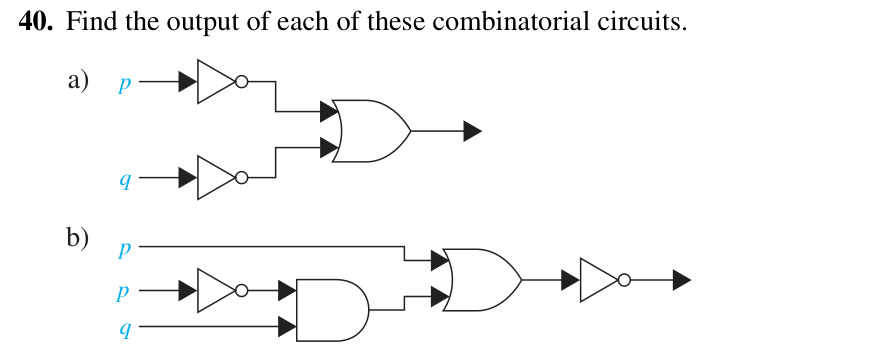

One button, both mids papers. Pick a subject below to focus — 📘 EL170 · Functional English (clauses · phrases · 12 tenses · PoS · cross-culture · formal email → mock test + sample paper) or 🧮 MA216 · Discrete Structures (zero-to-hero logic: equivalences · De Morgan · circuits · converse/inverse · the confirmed Rules-of-Inference long question → sample papers). Your subject choice is remembered; press 1–5 to jump between that subject's tabs.
📘 Full EL170 Notes 🧮 Full DS Notes mock tests & sample papers are inside this page ↓
| Independent | Dependent | |
|---|---|---|
| Has | subject + verb + complete thought | subject + verb + a marker word |
| Can stand alone? | Yes — it's a sentence | No — needs an independent partner |
| Example | the sun was shining | because the sun was shining |
Marker words by meaning: TIME (after, before, when, while, since, until) · REASON (because, as, since) · CONDITION (if, unless, whether) · CONTRAST (although, though, even though).
| Type | Head word is a… | Answers… | Example |
|---|---|---|---|
| Noun phrase | noun | who/what | the tall boy · a glass of water |
| Prepositional phrase | preposition | where/when/how | under the table · in the morning |
| Adjective phrase | adjective | describes a noun | very tall · afraid of the dark |
| Adverb phrase | adverb | describes verb/adj/adv | very quickly · in a hurry |
| SIMPLE fact / habit | CONTINUOUS in progress | PERFECT done / links times | PERF. CONT. how long | |
|---|---|---|---|---|
| PRESENT | work / works works daily | am/is/are + -ing is working now | has/have + V3 has worked here | has/have been + -ing has been working |
| PAST | V2 worked yesterday | was/were + -ing was working at 8 | had + V3 had worked by then | had been + -ing had been working |
| FUTURE | will + V1 will work tomorrow | will be + -ing will be working at 5 | will have + V3 will have worked | will have been + -ing will have been working |
had + been + -ing.
Time changes only the helping verb; the aspect never changes.Signal words: every day/usually → pres. simple · now/look/at this moment → pres. cont. · yesterday/last year/ago → past simple · since/for/already/yet → present perfect · by the time/before/after (two pasts) → past perfect · tomorrow/next week → future.
| # | PoS | Job | Signal / test | Examples |
|---|---|---|---|---|
| 1 | Noun | names a person/thing/place/idea | the/a/my + word | city, honesty, Ali |
| 2 | Pronoun | replaces a noun | stands in for a name | he, she, it, they, mine |
| 3 | Verb | shows action/state | can you conjugate it? | run, is, seemed |
| 4 | Adjective | describes a noun/pronoun | which/what kind? | tall, green, afraid |
| 5 | Adverb | describes verb/adj/other adv | often ends in -ly; how/when/where? | quickly, very, yesterday |
| 6 | Preposition | shows place/time/relationship | goes before a noun phrase | in, on, at, between, beneath |
| 7 | Conjunction | joins words/clauses | FANBOYS / because / although | and, but, because, if |
| 8 | Interjection | sudden feeling | exclamation mark | oh! wow! alas! |
| Hall's Iceberg (1976) | Hofstede's Onion (1980/2010) |
|---|---|
| Above water (visible): dress, food, language, greetings, gestures | Outside layers = Practices: Symbols → Heroes → Rituals (change fast) |
| Below water (hidden): values, beliefs, attitude to authority/time/family | Core = Values (invisible, learned early, change slowly) |
| Key line: most conflict comes from the hidden layer | Key line: practices change faster than values |
| Dimension | Kid question | 🇵🇰 Pakistan | 🇺🇸 USA |
|---|---|---|---|
| Individualism vs Collectivism | "I win" or "we win"? | 14 (collectivist) | 91 (individualist) |
| Uncertainty Avoidance | "Tell me EXACTLY the rules!" | 70 (high) | 46 |
| Power Distance | Can juniors question the boss? | 55 | 40 |
| Also: Masculinity/Femininity · Long-/Short-term Orientation · Indulgence/Restraint | Japan = highest masculinity + uncertainty avoidance | ||
Hall's context & time: high-context (PK, Japan — meaning in tone/silence/relationships, trust-based) vs low-context (USA, Germany — meaning in explicit words, contracts) · polychronic (relationships beat schedules) vs monochronic (punctuality).
7 PK-vs-global conflicts: ① hierarchy & silence · ② sifarish vs merit · ③ polite "no" (InshaAllah, dekhte hain) · ④ time flexibility · ⑤ gender norms (Harassment Act 2010) · ⑥ faith/Ramadan · ⑦ remote teams. CQ (Earley & Ang) = Drive · Knowledge · Strategy · Action.
| Informal | Semi-formal | Formal | |
|---|---|---|---|
| Reader | friends/close colleagues | known colleagues/managers | seniors, HR, new clients |
| Greeting | Hey Sam, | Hi Sara, | Dear Mr Khan, / Dear Sir or Madam, |
| Sign-off | Cheers, | Best regards, | Yours sincerely, / Kind regards, |
| Words | I'm, you're, slang | Could we…? polite | I am, I would (full forms) |
6-part anatomy: ① subject line · ② greeting · ③ purpose in the first 1–2 lines · ④ body (one idea per paragraph) · ⑤ closing ask with a deadline · ⑥ sign-off + signature.
Leave request: 19–21 October) → Greeting → Purpose first ("I am writing to request…") →
Details + ask + deadline ("Please reply by Friday") → Close ("Kind regards").You-attitude: ✗ "We cannot refund without a receipt." → ✓ "Return the item with your receipt to receive a full refund."
Openers: "Thank you for your email of 14 June." · "I am writing to enquire about…" · "Further to our phone call…" ·
"As you requested, I am attaching…"
Closers: "I look forward to hearing from you." · "Please feel free to contact me."
6 email kinds: internal · external · sales · routine · personalized · circulars. Letter types: personal · inquiry (intro/body/conclusion) · complaint · sales (headline→intro→body→call to action).
"Because he was late, he missed the bus" — is "Because he was late" a clause or a phrase?
↻ tapDependent clause — it has a subject (he) + verb (was) plus the marker because, so it can't stand alone.
"the very tall boy" — phrase type and head word?
↻ tapAdjective phrase, head = tall. "Very" only intensifies it.
Formula: past + perfect + continuous?
↻ taphad + been + V-ing → had been working. Time only changes the helping verb.
Two independent clauses + only one comma = ?
↻ tapComma splice. Fix: period · semicolon · comma+FANBOYS · make one dependent.
Iceberg = Hall or Hofstede? And PK 14 vs USA 91 = which dimension?
↻ tapHall's Iceberg (Hofstede = onion). 14 vs 91 = Individualism–Collectivism. (70/46 = uncertainty avoidance, 55/40 = power distance.)
What does BLUF stand for, and where does the purpose go?
↻ tapBottom Line Up Front — purpose and action in the first lines, details after.
Scored low? re-read the card above, then retry → FE Mock Test → · Full notes: EL170 →
Scored low? re-read the cheat cards → FE Revise tab → · Then try: FE Sample Paper → · Full notes: EL170 →
(a) "yo dude, send me that file asap!! thx"
(b) "hey sir, i need leave tmrw n day after, lemme know ok?"
(c) "u didnt reply to my mail lol, guess u dont care."
(a) "Dear Mr Ahmed,
Could you please send me the file by today? Thank you for your help.
Kind regards, Ali"
(b) "Dear Sir,
I would like to request leave for tomorrow and the following day (20–21 October). I will complete my pending work before leaving.
Yours sincerely, Hamza"
(c) "Dear Mr Khan,
I wrote to you on 12 October and have not yet received a reply. Could you let me know when to expect one?
Best regards, Sana"
What examiners tick (5 each): formal greeting (Dear …) · full forms (I would like, not i need) · no slang/text-speak (yo, dude, lol, tmrw) · polite request wording (Could you please…) · proper sign-off.
Convert the following non-formal chat paragraph into a formal, well-structured paragraph (use BLUF: purpose first, then details, then the action + deadline).
Subject: Revised delivery date for the website
"Dear Team,
I am writing to inform you that the website delivery will move from Friday, 23 October to Wednesday, 28 October.
The delay is due to the lead developer's illness and the pending testing, and the client has been notified of the
revised date.
I will share a corrected test plan by tomorrow and complete all checks before the new deadline.
Please send me any concerns by Thursday so we can resolve them in time.
Kind regards, Hamza Ali"
Why it scores 15: formal greeting · BLUF (new date in line 1 of the body) · exact dates, no lol/asap/next week maybe · one idea per paragraph · a clear action + deadline · polite close.
Write a formal email of 120–150 words using the 5-step frame. Choose one:
(A) Request your HR Manager's approval to attend a "Project Management Workshop" — explain how it helps your team.
(B) Complain to a supplier that Order No. 4521 (arrived late before) is late again — state the facts, the impact, and the resolution you want with a deadline.
Subject: Request for training approval: Project Management Workshop
Dear Mr Khan,
I am writing to request approval to attend the Project Management Workshop on 5 November. It will help me manage our
Q4 client projects more effectively, and the course details are attached.
I would be grateful for your decision by 22 October so that I can complete the registration.
Yours sincerely,
Ayesha Malik, Project Coordinator
Marking breakdown (20): subject line naming topic + action (3) · correct greeting with title + surname (3) · purpose in the first sentence — BLUF (4) · body with details and deadline (4) · polite sign-off + name/role (3) · grammar, spelling, tone (3).
Option B skeleton: Subject Complaint: late delivery of Order No. 4521 → Dear Sir or Madam → facts up front (order number, dates, phone promise) → impact on the ward → "Please deliver by 20 October or tell us a new date; otherwise we will cancel and request a refund" → Sincerely.
Identify the parts of speech of the bold word in each sentence.
(a) Honestly, the results were disappointing.
(b) The tall building shook in the wind.
(c) The keys are between the sofa and the table.
(d) The children were laughing loudly.
(e) She completed the task yesterday.
| Item | Answer | Why (the test) |
|---|---|---|
| (a) Honestly | Adverb | describes the whole sentence/how; usually -ly |
| (b) tall | Adjective | describes a noun ("which building?") |
| (c) between | Preposition | shows place before a noun phrase |
| (d) children | Noun | names a thing/person — comes after "the" |
| (e) completed | Verb | shows action (did what?) — V2 of complete |
Chameleon warning: "She spoke honestly" vs "an honest answer" — always ask what job it does here, not how it ends.
Fill in the blanks with the correct tense of the verb in brackets.
(a) Water ___ at 100°C. (boil)
(b) Look! The baby ___. (cry)
(c) She ___ Lahore last year. (visit)
(d) The train ___ before we reached the station. (leave)
(e) I ___ him since 2018. (know)
| # | Answer | Signal → rule |
|---|---|---|
| (a) | boils | general truth → present simple (V5 / +s) |
| (b) | is crying | "Look!" = happening now → present continuous (am/is/are + -ing) |
| (c) | visited | "last year" = finished past time → past simple (V2) |
| (d) | had left | earlier of two pasts → past perfect (had + V3) |
| (e) | have known | "since + point" → present perfect (has/have + V3) |
Trap check: ✗ have went (needs V3 gone) · ✗ since 5 years (that's for) · ✗ Did you went? (did + V1) · ✗ He work (he/she/it → -s).
Convert each clause (it has a subject + verb) into a phrase (no subject + verb) without changing the meaning.
(a) the book which is on the table
(b) the man who is at the door
(c) because it was raining, we stayed inside
(d) the students who are in my class
(e) he is tired because he worked all night
| # | Clause | → Phrase |
|---|---|---|
| (a) | which is on the table | on the table (prepositional phrase) |
| (b) | who is at the door | at the door (prepositional phrase) |
| (c) | because it was raining | because of the rain (prepositional phrase) |
| (d) | who are in my class | in my class (prepositional phrase) |
| (e) | because he worked all night | after working all night (prepositional phrase) |
The trick: drop the relative pronoun + be (who/which/that + is/are) and keep the head noun + the remaining phrase; turn because + clause into because of + noun. ✗ Never leave a subject+verb inside, or it's still a clause!
(a) Hall's Cultural Iceberg (1976) — behaviour we see vs values we can't:
| 🌊 Above the surface (visible) | 🧊 Below the surface (hidden) |
|---|---|
| Standing up · "Sir" · starting with chai · family talk · the words "InshaAllah, we will try" | Attitude to authority (juniors don't challenge) · group harmony/consensus · face & respect (no public pressure) · the indirect "no" · relationship-first thinking |
(b) Onion: chai rituals and family questions = Rituals (practices — visible, change fast); "respect for elders/authority" = Values (the invisible core, learned early, change slowly). Both sit in the hidden layer of the iceberg.
(c) Power Distance — Pakistan 55 vs USA 40 (and the related Individualism gap, 14 vs 91): juniors accept unequal power, disagree privately, and use titles; the Dutch read silence as agreement and behave flatly (low power distance).
(d) Conflict #3 — saying "no" & indirect feedback ("InshaAllah / dekhte hain / try karenge" may be a polite no). Fix (CQ Strategy + Action): pause → check the assumption → confirm commitments in writing, rephrase "try" as yes/no with conditions, ask juniors last or privately — then adapt your own style. Remember: misread signals, not bad intent.
Marking: model named + correct sorting (4) · both onion layers right (2) · dimension + score (2) · conflict #3 + fix (2).
Related: EL170 full notes (clauses · phrases · tenses · cross-culture) → ·
FE Quiz (20 MCQs) → ·
Notes: MASTER-REVISION.md
| Q# | Likely topic (from your hints) | How this tab prepares you |
|---|---|---|
| Q1–Q2 | Expressions — English ⇄ symbols, compound propositions | "Expressions" card |
| Q2–Q3 | Logical equivalence + De Morgan's & other laws | "Equivalence Laws" + "Prove equivalence" cards |
| Q3–Q4 | Converse · Inverse (and contrapositive) — which is equivalent? | "Converse/Inverse" card |
| Q4–Q5 | Digital circuits — gates, circuit ⇄ expression, simplification | "Digital Circuits" card |
| Q6 ⭐ LONG | Rules of Inference on premises OR Quantifiers — CONFIRMED to appear | "Rules of Inference" + "Quantifiers" cards — do these twice! |
| p | q | ¬p | p ∧ q | p ∨ q | p → q | p ↔ q |
|---|---|---|---|---|---|---|
| T | T | F | T | T | T | T |
| T | F | F | F | T | F ⚠️ | F |
| F | T | T | F | T | T | F |
| F | F | T | F | F | T | T |
Terminology: hypothesis/antecedent = the p side of p→q · conclusion/consequent = the q side. A tautology = always T · contradiction = always F · contingency = sometimes T, sometimes F.
Start from any "if…then": p → q ("If it rains, the ground is wet").
| Name | Shape | English | Equivalent to p→q? |
|---|---|---|---|
| Original | p → q | If it rains, the ground is wet | — |
| Converse | q → p | If the ground is wet, it rained | ❌ No |
| Inverse | ¬p → ¬q | If it does NOT rain, the ground is NOT wet | ❌ No (same lie as converse) |
| Contrapositive | ¬q → ¬p | If the ground is NOT wet, it did NOT rain | ✅ YES — always! |
Two expressions are logically equivalent (written ≡) when they have the identical truth table columns — they're "the same sentence wearing different words".
| Law | Rule | Plain English |
|---|---|---|
| Double negation | ¬(¬p) ≡ p | two negatives make a positive |
| De Morgan 1 ⭐ | ¬(p ∧ q) ≡ ¬p ∨ ¬q | "not (A and B)" = "not-A OR not-B" |
| De Morgan 2 ⭐ | ¬(p ∨ q) ≡ ¬p ∧ ¬q | "not (A or B)" = "not-A AND not-B" |
| Commutative | p ∧ q ≡ q ∧ p · p ∨ q ≡ q ∨ p | order doesn't matter |
| Associative | (p ∧ q) ∧ r ≡ p ∧ (q ∧ r) (same for ∨) | grouping doesn't matter |
| Distributive | p ∧ (q ∨ r) ≡ (p ∧ q) ∨ (p ∧ r) p ∨ (q ∧ r) ≡ (p ∨ q) ∧ (p ∨ r) | ∧ distributes over ∨ (and vice versa) — like × over + |
| Implication ⭐ | p → q ≡ ¬p ∨ q | "if p then q" secretly means "no-p or q"! |
| Contrapositive | p → q ≡ ¬q → ¬p | the safe flip |
| Biconditional | p ↔ q ≡ (p → q) ∧ (q → p) | "iff" = both directions at once |
| Identity | p ∧ T ≡ p · p ∨ F ≡ p | the neutral element |
| Domination | p ∨ T ≡ T · p ∧ F ≡ F | the boss wins |
| Idempotent | p ∧ p ≡ p · p ∨ p ≡ p | repeating changes nothing |
| Absorption ⭐ | p ∨ (p ∧ q) ≡ p · p ∧ (p ∨ q) ≡ p | the little one gets absorbed |
| Negation | p ∨ ¬p ≡ T · p ∧ ¬p ≡ F | either-yes-or-no = T; both = impossible |
Method 1 — Truth tables (always works, always full marks): build one table with both columns side by side. If the two columns match in every row → equivalent. If even one row differs → NOT equivalent.
| p | q | ¬p | ¬p ∨ q | p → q |
|---|---|---|---|---|
| T | T | F | T | T |
| T | F | F | F | F |
| F | T | T | T | T |
| F | F | T | T | T |
Columns identical → p → q ≡ ¬p ∨ q (the Implication Law) ✔ — write this table in the exam and you're done.
Method 2 — Laws (neater, shorter): rewrite one side step by step using the laws until it becomes the other side. Example: ¬(p → q) ≡ ¬(¬p ∨ q) [Implication] ≡ ¬¬p ∧ ¬q [De Morgan 2] ≡ p ∧ ¬q [Double negation] ✔
Every connective is a gate in a chip. Same logic, different drawing. ✏️ You get asked to (a) draw a circuit for an expression, or (b) write the expression for a given circuit, then simplify.
| Gate | Symbol name | Expression | Truth in one line |
|---|---|---|---|
| AND | →-shaped back | p ∧ q | both must be 1 |
| OR | curved back | p ∨ q | at least one 1 |
| NOT | triangle + bubble | ¬p | flips the bit |
| NAND | AND + bubble | ¬(p ∧ q) | "not-both" |
| NOR | OR + bubble | ¬(p ∨ q) | "neither" |
| XOR | OR + double curve | p ⊕ q = (p ∧ ¬q) ∨ (¬p ∧ q) | exactly one 1 |
Example: (p ∧ q) ∨ ¬r — draw left to right: p ──┐ AND ──┐ q ──┘ ├─ OR ──→ output r ──[NOT]───┘
| English words | Symbol | Example |
|---|---|---|
| and, but, also, moreover | ∧ | "It is raining and cold" → p ∧ q |
| or (inclusive) | ∨ | "tea or coffee" → p ∨ q |
| either…or (exclusive) | ⊕ | "Either Ali or Sara did it (not both)" → p ⊕ q |
| if…then | → | "If it rains, match cancelled" → p → q |
| only if | → (backwards!) | "You pass only if you study" → pass → study |
| unless | ∨ with a negation | "Leave unless I say stay" → stay ∨ leave (or ¬stay → leave) |
| when / whenever | → | "I smile when I win" → win → smile |
| iff / if and only if | ↔ | "A number is even iff it is divisible by 2" |
Worked example: "You can graduate (g) only if you pass all courses (c) and pay your fees (f)." → g → (c ∧ f) ✅ (only-if = arrowhead on itself). Negation practice: ¬(c ∧ f) ≡ ¬c ∨ ¬f (De Morgan!).
An argument = premises (the "given"s) + a conclusion after ∴. It is valid when it's impossible for all premises to be true and the conclusion false — the conclusion must follow.
| Rule | Premises | ∴ Conclusion | Kid name |
|---|---|---|---|
| Modus ponens | p, p → q | q | "say yes, get the result" |
| Modus tollens | ¬q, p → q | ¬p | "no result → no trigger" |
| Hypothetical syllogism | p → q, q → r | p → r | "domino chain" |
| Disjunctive syllogism | p ∨ q, ¬p | q | "eliminate one door" |
| Addition | p | p ∨ q | "A true → A-or-B true" |
| Simplification | p ∧ q | p | "open the combo pack" |
| Conjunction | p, q | p ∧ q | "tape two facts together" |
| Resolution | p ∨ q, ¬p ∨ r | q ∨ r | "cancel the matching pair" |
⭐ WORKED LONG QUESTION — always in Step | Reason format:
Premises: ① r → p ② ¬p ∧ q ③ ¬r → s ④ s → t. Prove: ∴ t
| Step | Statement | Reason |
|---|---|---|
| 1 | ¬p ∧ q | Premise ② |
| 2 | ¬p | Simplification from (1) |
| 3 | r → p | Premise ① |
| 4 | ¬r | Modus tollens from (2),(3) |
| 5 | ¬r → s | Premise ③ |
| 6 | s | Modus ponens from (4),(5) |
| 7 | s → t | Premise ④ |
| 8 | t | Modus ponens from (6),(7) ∎ |
| Rule | From | To | Kid version |
|---|---|---|---|
| UI (universal instantiation) | ∀x P(x) | P(c), any c you like | "every kid loves chocolate → pick ANY kid, he loves it" |
| UG (universal generalization) | P(c) for an arbitrary c | ∀x P(x) | "true for a randomly-picked kid → true for ALL" |
| EI (existential instantiation) | ∃x P(x) | P(c), c = fresh mystery name | "someone ate the cookie — call him 'c', we don't know who" |
| EG (existential generalization) | P(c) for some c | ∃x P(x) | "Ali loves chocolate → SOMEONE does" |
⭐ The two super-combos (most likely quantified long question):
Universal modus ponens: ∀x(P(x) → Q(x)), P(a) ∴ Q(a) — "Every row that passes validation is loaded.
Row 482 passed ∴ row 482 is loaded."
Universal modus tollens: ∀x(P(x) → Q(x)), ¬Q(a) ∴ ¬P(a) — "Every valid row loads; row 519 did NOT load ∴ it did not pass."
Worked short proof: Premises: ∃x(S(x) ∧ ¬C(x)), ∀x(S(x) → I(x)). ∴ ∃x(I(x) ∧ ¬C(x))
| Step | Statement | Reason |
|---|---|---|
| 1 | ∃x(S(x) ∧ ¬C(x)) | Premise |
| 2 | S(a) ∧ ¬C(a) | EI on (1) — a = fresh name |
| 3 | S(a) | Simplification on (2) |
| 4 | ∀x(S(x) → I(x)) | Premise |
| 5 | S(a) → I(a) | UI on (4) — the SAME a |
| 6 | I(a) | Modus ponens on (3),(5) |
| 7 | ¬C(a) | Simplification on (2) |
| 8 | I(a) ∧ ¬C(a) | Conjunction on (6),(7) |
| 9 | ∃x(I(x) ∧ ¬C(x)) | EG on (8) ∎ |
¬(p ∧ q) = ? (De Morgan)
↻ tap¬p ∨ ¬q — break the bracket, flip ∧↔∨, negate every letter.
Which of converse / inverse / contrapositive is equivalent to the original?
↻ tapContrapositive only (¬q→¬p). Converse and inverse are equivalent to each other, not to the original.
p → q in disguise (implication law)?
↻ tap¬p ∨ q — "if p then q" really means "no-p, or q".
"p only if q" = ?
↻ tapp → q — "only if" points the arrow at itself. (And "p is necessary for q" also = q → p.)
Modus ponens vs modus tollens?
↻ tapMP: p, p→q ∴ q (uses the then-part) · MT: ¬q, p→q ∴ ¬p (kills the then-part).
NAND gate = which expression? And De Morgan's use in circuits?
↻ tap¬(p ∧ q) = ¬p ∨ ¬q — push the bubble back through the gate and flip AND↔OR.
Ready? try the DS Sample Paper (6 questions) → · Paper 2 — Rosen 7e verbatim → · Full notes: MA216 →
Let p: "It is raining", q: "the match is cancelled", r: "the ground is wet". Write each sentence in symbolic logic.
(a) It is raining and the match is not cancelled.
(b) If it is raining, then the ground is wet.
(c) The match is cancelled only if it is raining.
(d) It is not raining unless the ground is wet.
(e) The ground is wet if and only if it is raining or the match is cancelled.
| # | Answer | Rule used |
|---|---|---|
| (a) | p ∧ ¬q | "and" = ∧ · "not" = ¬ |
| (b) | p → r | "if…then" = → |
| (c) | q → p | ⚠️ "only if" points the arrow at itself — NOT p → q! |
| (d) | ¬p ∨ r (equivalently ¬r → p) | "unless" = inclusive OR with a negation |
| (e) | r ↔ (p ∨ q) | "iff" = ↔ · "or" = ∨ (brackets matter!) |
Marking (3 each): correct connective (2) + correct order/brackets/negation (1). Common slip: (c) reversed — only if ≠ if.
Using a truth table, show that the following pair is (or is not) logically equivalent:
| p | q | r | p→q | p→r | (p→q)∧(p→r) | q∧r | p→(q∧r) |
|---|---|---|---|---|---|---|---|
| T | T | T | T | T | T | T | T |
| T | T | F | T | F | F | F | F |
| T | F | T | F | T | F | F | F |
| T | F | F | F | F | F | F | F |
| F | T | T | T | T | T | T | T |
| F | T | F | T | T | T | F | T |
| F | F | T | T | T | T | F | T |
| F | F | F | T | T | T | F | T |
Conclusion: the two bold columns are identical in all 8 rows → the statements are logically equivalent ✔ (∎).
Marking: 3 variables = 8 rows in correct TT/TF/FT/FF order (3) · → columns right (3) · both target columns right (4) · identical/not-identical observation (2) · conclusion with ∎ (3).
Simplify each expression as far as possible, name every law you use in brackets.
(a) ¬(p ∨ ¬q)
(b) (p ∧ q) ∨ (p ∧ ¬q)
(c) ¬(¬p ∧ q) ∧ p
(a) ¬(p ∨ ¬q) ≡ ¬p ∧ ¬¬q (De Morgan 2) ≡ ¬p ∧ q (Double negation) ∎
(b) (p ∧ q) ∨ (p ∧ ¬q) ≡ p ∧ (q ∨ ¬q) (Distributive — backwards) ≡ p ∧ T (Negation: q ∨ ¬q ≡ T) ≡ p (Identity) ∎
(c) ¬(¬p ∧ q) ≡ p ∨ ¬q (De Morgan 1) → (p ∨ ¬q) ∧ p ≡ p (Absorption: (p ∨ x) ∧ p ≡ p) ∎
Marking (5 each): correct first step (2) · correct law names (2) · fully simplified final answer (1). ⚠️ Losing marks usually means forgetting to negate every letter in De Morgan.
(a) Draw the logic circuit for the expression ¬(p ∨ q) ∧ r. (6)
(b) Write the Boolean expression for this circuit: inputs p and q go into a NAND gate; its output is ORed with ¬r. (4)
(c) Simplify the expression (p ∧ q) ∨ (p ∧ ¬q) using Boolean laws, and state how many gates the simplified
circuit needs compared with the original. (5)
(a) OR(p, q) → NOT → AND with r:
p ──┐ OR ──[NOT]──┐ q ──┘ ├─ AND ──→ output r ────────────────┘
(b) NAND(p,q) gives ¬(p ∧ q); ORing with ¬r gives ¬(p ∧ q) ∨ ¬r ≡ ¬p ∨ ¬q ∨ ¬r (De Morgan 1 on the first term) — a single 3-input OR gate!
(c) (p ∧ q) ∨ (p ∧ ¬q) ≡ p ∧ (q ∨ ¬q) ≡ p ∧ T ≡ p — the whole circuit collapses to a single wire (0 gates). Original needed 2 ANDs + 1 OR + 1 NOT = 4 gates.
Marking: (a) OR then NOT then AND drawn with correct wires (6) · (b) correct expression (3) + De Morgan simplification bonus (1) · (c) 3 steps with law names (4) + gate count (1).
Consider the statement: "If a function is differentiable, then it is continuous." (p: differentiable, q: continuous)
(a) Write its converse, inverse and contrapositive in English. (6)
(b) Which of the three is logically equivalent to the original? Justify in one line. (4)
(c) Using the implication law and a truth table, verify that the original ≡ its contrapositive. (10)
(a) Converse: "If a function is continuous, then it is differentiable." (q → p)
Inverse: "If a function is not differentiable, then it is not continuous." (¬p → ¬q)
Contrapositive: "If a function is not continuous, then it is not differentiable." (¬q → ¬p)
(b) Only the contrapositive — because p → q ≡ ¬q → ¬p (flip and negate both sides). (Fun fact: the converse "continuous ⇒ differentiable" is actually false — |x| is continuous at 0 but not differentiable! A counterexample kills a statement instantly.)
| p | q | ¬p | ¬q | p → q | ¬q → ¬p |
|---|---|---|---|---|---|
| T | T | F | F | T | T |
| T | F | F | T | F | F |
| F | T | T | F | T | T |
| F | F | T | T | T | T |
Columns identical in every row → p → q ≡ ¬q → ¬p ∎ (Also note: converse and inverse columns are identical to each other, not to the original.)
Marking: (a) 2 each, English + symbol both needed (6) · (b) contrapositive + justification (4) · (c) 4-row table correct (5) + columns compared (2) + conclusion ∎ (3).
Use the rules of inference to show that the conclusion follows from the premises. Present your answer as a Step | Statement | Reason table.
Bonus part (if your paper mixes the two): given ∀x(P(x) → Q(x)) and P(a), conclude Q(a) — name the two rules fused together.
| Step | Statement | Reason |
|---|---|---|
| 1 | ¬p ∧ q | Premise ① |
| 2 | ¬p | Simplification from (1) |
| 3 | r → p | Premise ② |
| 4 | ¬r | Modus tollens from (2),(3) |
| 5 | ¬r → s | Premise ③ |
| 6 | s | Modus ponens from (4),(5) |
| 7 | s → t | Premise ④ |
| 8 | t | Modus ponens from (6),(7) ∎ |
Bonus: ∀x(P(x) → Q(x)), P(a) ∴ Q(a) = Universal Modus Ponens = UI (instantiate the ∀ at a) fused with Modus Ponens.
Marking (25): premises translated/written (3) · step 2 Simplification (3) · step 4 Modus tollens (5 — the key step most students miss) · step 6 Modus ponens (4) · step 8 Modus ponens + ∎ (4) · clean Step|Reason format with every line justified (6). No reason = no marks, even if the statement is right!
Related: MA216 full notes (logic → inference → proofs) → · DS Revision — Logic → · DS Quiz (12 MCQs) →
| Q | Topic (your paper hints) | Exact source in Rosen 7e | Marks |
|---|---|---|---|
| Q1 | Expressions — English ⇄ symbols | §1.1 Exercise 11 (a–g) | 15 |
| Q2 | Logical equivalence — truth table | §1.3 Exercise 23 | 15 |
| Q3 | Laws — De Morgan's law + negations | §1.3 Exercises 6 & 7 | 15 |
| Q4 | Digital circuits | §1.2 Exercises 40 & 42 | 15 |
| Q5 | Converse · Inverse · Contrapositive | §1.1 Exercise 27 (a–c) | 20 |
| Q6 ⭐ | Rules of Inference on premises + Quantifiers | §1.6 Exercises 6 & 27 | 25 |
Let p: "It is below freezing" and q: "It is snowing". Write each of these propositions using p, q and logical connectives (including negations).
(a) It is below freezing and snowing.
(b) It is below freezing but not snowing.
(c) It is not below freezing and it is not snowing.
(d) It is either snowing or below freezing (or both).
(e) If it is below freezing, it is also snowing.
(f) Either it is below freezing or it is snowing, but it is not snowing if it is below freezing.
(g) That it is below freezing is necessary and sufficient for it to be snowing.
| # | Answer | Trigger word → connective |
|---|---|---|
| (a) | p ∧ q | "and" = ∧ |
| (b) | p ∧ ¬q | "but" is still just AND — it only changes the feeling, not the logic |
| (c) | ¬p ∧ ¬q | "not … and … not" = two negations joined by ∧ (≡ ¬(p ∨ q) by De Morgan) |
| (d) | p ∨ q | "either … or" plus the hint "(or both)" = inclusive or (an exclusive "one or the other, not both" would be ⊕) |
| (e) | p → q | "if p, then q" — hypothesis first |
| (f) | (p ∨ q) ∧ (p → ¬q) | two clauses joined by "but" (∧); "it is not snowing if it is below freezing" = p → ¬q — X if Y makes Y the hypothesis! |
| (g) | p ↔ q | "necessary for" = arrow pointing back (q → p), "sufficient for" = arrow pointing forward (p → q); both together = ↔ |
Marking (15): 2 marks each for (a)–(f) — correct connective 1.5 + correct order/negation 0.5 — and 3 marks for (g) (q → p and p → q worth 1.5 each). Most-missed: (f) reversed into q → ¬p, and (d) written as ⊕.
Trap check: ✗ "but" written as → · ✗ (f) forgetting the opening "either … or" so only half the sentence is translated · ✗ (g) writing only → (that's just "sufficient").
Show that these two compound propositions are logically equivalent:
| p | q | r | p→r | q→r | (p→r)∧(q→r) | p∨q | (p∨q)→r |
|---|---|---|---|---|---|---|---|
| T | T | T | T | T | T | T | T |
| T | T | F | F | F | F | T | F |
| T | F | T | T | T | T | T | T |
| T | F | F | F | T | F | T | F |
| F | T | T | T | T | T | T | T |
| F | T | F | T | F | F | T | F |
| F | F | T | T | T | T | F | T |
| F | F | F | T | T | T | F | T |
Conclusion: the two bold columns match in all 8 rows → the statements are logically equivalent ∎
Bonus — the same proof using laws (neater, if the question says "using laws"):
(p → r) ∧ (q → r) ≡ (¬p ∨ r) ∧ (¬q ∨ r) (Implication) ≡ (¬p ∧ ¬q) ∨ r (Distributive — reversed)
≡ ¬(p ∨ q) ∨ r (De Morgan) ≡ (p ∨ q) → r (Implication) ∎
Marking (15): 8 rows in correct order with 3 variables (4) · the two → columns right (3) · both target columns right (4) · "identical in every row" observation (2) · conclusion with ∎ (2).
(a) Use a truth table to verify the first De Morgan law: ¬(p ∧ q) ≡ ¬p ∨ ¬q (7 marks)
(b) Use De Morgan's laws to find the negation of each of these statements (2 marks each):
(i) Jan is rich and happy.
(ii) Carlos will bicycle or run tomorrow.
(iii) Mei walks or takes the bus to class.
(iv) Ibrahim is smart and hard working.
| p | q | p ∧ q | ¬(p ∧ q) | ¬p | ¬q | ¬p ∨ ¬q |
|---|---|---|---|---|---|---|
| T | T | T | F | F | F | F |
| T | F | F | T | F | T | T |
| F | T | F | T | T | F | T |
| F | F | F | T | T | T | T |
The two bold columns are identical in every row → ¬(p ∧ q) ≡ ¬p ∨ ¬q verified ∎
| # | Statement | Step 1 — break the bracket, flip ∧↔∨ | Negation (plain English) |
|---|---|---|---|
| (i) | Jan is rich and happy | ¬rich ∨ ¬happy | Jan is not rich or not happy (or both) |
| (ii) | Carlos will bicycle or run | ¬bicycle ∧ ¬run | Carlos will neither bicycle nor run tomorrow |
| (iii) | Mei walks or takes the bus | ¬walks ∧ ¬bus | Mei neither walks nor takes the bus to class |
| (iv) | Ibrahim is smart and hard working | ¬smart ∨ ¬hardworking | Ibrahim is not smart or not hard working |
Marking: (a) 7 — rows (2) · ¬(p∧q) column (2) · ¬p∨¬q column (2) · identical-columns conclusion ∎ (1). (b) 2 each — flipped connective (1) + every letter negated, stated in correct English (1).
#1 lost mark: flipping ∧ to ∨ but forgetting to negate the letters — e.g. writing "not (rich or happy)" is the statement itself, not its negation. Say it out loud: "break the bracket, flip the sign, negate every letter."
(a) Find the output of each of these combinatorial circuits. (7 marks — 3 + 4)

Exhibit from Rosen 7e, §1.2 Exercise 40 — printed here for your revision.
(b) Construct a combinatorial circuit using inverters, OR gates, and AND gates that produces the output (p ∧ ¬r) ∨ (¬q ∧ r) from input bits p, q, and r. (8 marks)
i (top circuit): p goes through an inverter → ¬p · q through an inverter → ¬q · both feed an OR gate → ¬p ∨ ¬q — which by De Morgan is the same as ¬(p ∧ q): this drawing is literally a NAND gate in disguise! 🎯
ii (bottom circuit): walk the wires in order:
inner AND = ¬p ∧ q → OR with the straight p = p ∨ (¬p ∧ q) → final inverter = ¬(p ∨ (¬p ∧ q)) ∎
(bonus simplification) ≡ ¬p ∧ ¬(¬p ∧ q) (De Morgan) ≡ ¬p ∧ (p ∨ ¬q) (De Morgan + double negation)
≡ (¬p ∧ p) ∨ (¬p ∧ ¬q) (Distributive) ≡ F ∨ (¬p ∧ ¬q) (Negation) ≡ ¬p ∧ ¬q (Identity) —
the whole circuit collapses to "neither p nor q"!
p ─────────────┐ AND ────┐
│ │
r ──[NOT]──────┘ ├── OR ──→ output
│
q ──[NOT]──────┐ │
│ AND ────┘
r ─────────────┘
How to build it (left → right): ① read the expression and find the outermost connective = the last gate (∨ → one OR gate on the right). ② Its two inputs are the two branches: p ∧ ¬r (top AND, fed by p and an inverter on r) and ¬q ∧ r (bottom AND, fed by an inverter on q and r straight). ③ r is wired twice — once through an inverter, once plain. Every ¬ = one inverter, every ∧ = one AND, every ∨ = one OR.
Marking (15): (a-i) 3 — ¬p, ¬q and the OR identified · (a-ii) 4 — correct raw output ¬(p ∨ (¬p ∧ q)) (3) + correct simplification to ¬p ∧ ¬q with law names (1) · (b) 8 — two inverters (2) · two AND gates (2) · one OR gate (1) · correct wiring of all five signals (3).
Trap check: ✗ drawing the final gate of (b) as AND instead of OR · ✗ wiring r only once · ✗ forgetting the inverter on p and q in (a-i) — the circles on the triangles ARE the nots.
State the converse, contrapositive, and inverse of each of these conditional statements (rewrite each first as "if p, then q" — that rewrite is where the marks start):
(a) If it snows today, I will ski tomorrow.
(b) I come to class whenever there is going to be a quiz.
(c) A positive integer is a prime only if it has no divisors other than 1 and itself.
| Original (if–then) | Converse (q → p) | Inverse (¬p → ¬q) | Contrapositive (¬q → ¬p) | |
|---|---|---|---|---|
| (a) | If it snows today (p), I will ski tomorrow (q) | If I ski tomorrow, it snowed today | If it does not snow today, I will not ski tomorrow | If I do not ski tomorrow, it did not snow today |
| (b) | If there is going to be a quiz (p), then I come to class (q) — "whenever" = the quiz is the hypothesis | If I come to class, there is going to be a quiz | If there is not going to be a quiz, I do not come to class | If I do not come to class, there is not going to be a quiz |
| (c) | If a positive integer is prime (p), then it has no divisors other than 1 and itself (q) — "only if" points at itself: p → q | If a positive integer has no divisors other than 1 and itself, then it is prime | If a positive integer is not prime, then it has a divisor other than 1 and itself | If a positive integer has a divisor other than 1 and itself, then it is not prime |
Marking (20): 18 marks for 3 statements × 3 forms (2 each — English meaning must be right, not just the symbols) + 2 marks for the correct if–then rewrites in (b) and (c).
Trap check: ✗ "whenever" treated as the conclusion (it's the hypothesis: P whenever Q = Q → P) · ✗ "only if" written backwards (P only if Q = P → Q, the arrowhead sits on Q's side, exactly like "if") · ✗ inventing a "not" that isn't there — inverse/contrapositive negate both sides, nothing else changes.
(a) Use rules of inference to show that the hypotheses imply the conclusion. Present your answer as a Step | Statement | Reason table — one rule per line, every line justified.
(b) Quantifier version (your paper says premises or quantifiers — practise both): Use rules of inference to show that if ∀x(P(x) → (Q(x) ∧ S(x))) and ∀x(P(x) ∧ R(x)) are true, then ∀x(R(x) ∧ S(x)) is true.
Symbols: r = it rains · f = it is foggy · s = sailing race is held · d = lifesaving demo goes on · t = trophy awarded.
H1: (¬r ∨ ¬f) → (s ∧ d) H2: s → t H3: ¬t ∴ r
| Step | Statement | Reason |
|---|---|---|
| 1 | s → t | Hypothesis H2 |
| 2 | ¬t | Hypothesis H3 |
| 3 | ¬s | Modus tollens from (1), (2) |
| 4 | ¬s ∨ ¬d | Addition from (3) |
| 5 | ¬(s ∧ d) | De Morgan's law from (4) |
| 6 | (¬r ∨ ¬f) → (s ∧ d) | Hypothesis H1 |
| 7 | ¬(¬r ∨ ¬f) | Modus tollens from (5), (6) |
| 8 | ¬¬r ∧ ¬¬f | De Morgan's law from (7) |
| 9 | r ∧ f | Double negation from (8) |
| 10 | r | Simplification from (9) ∎ |
Attack strategy (works on every premises question): look at the conclusion (here: the letter r alone) → hunt the premise that can produce it (H1 ends in s ∧ d, so you'd need ¬(¬r ∨ ¬f), i.e. kill the s ∧ d side) → work backwards until every missing piece is a hypothesis. H3 kills H2 → kills H1's conclusion → frees r.
Marking (15): premises translated (2) · step 3 Modus tollens (3) · steps 4–5 Addition + De Morgan (3) · step 7 Modus tollens — the key step most students miss (3) · steps 8–9 De Morgan + double negation (2) · step 10 Simplification + ∎ (1) · clean Step|Reason with every line justified (1).
| Step | Statement | Reason |
|---|---|---|
| 1 | ∀x(P(x) ∧ R(x)) | Premise 2 |
| 2 | P(a) ∧ R(a) | Universal instantiation (UI) from (1) — a is an arbitrary element |
| 3 | P(a) | Simplification from (2) |
| 4 | ∀x(P(x) → (Q(x) ∧ S(x))) | Premise 1 |
| 5 | P(a) → (Q(a) ∧ S(a)) | UI from (4) — the same a as step 2 |
| 6 | Q(a) ∧ S(a) | Modus ponens from (3), (5) |
| 7 | S(a) | Simplification from (6) |
| 8 | R(a) ∧ P(a) | Commutativity from (2) — flip first, because R(a) sits on the right |
| 9 | R(a) | Simplification from (8) |
| 10 | R(a) ∧ S(a) | Conjunction from (9), (7) |
| 11 | ∀x(R(x) ∧ S(x)) | Universal generalization (UG) from (10) — a was arbitrary ∎ |
Marking (10): UI twice at the same name (2) · Simplification → P(a) (1) · Modus ponens (2) · S(a) (1) · commutativity trick + R(a) (1) · Conjunction (1) · UG + ∎ (1).
Related: DS Zero-to-Hero → ·
DS Sample Paper 1 → ·
MA216 full notes → ·
DS Revision — Logic → ·
DS Quiz (12 MCQs) → ·
Source: _inbox/Rosen-1-1.6.pdf (Rosen 7e, §§1.1–1.6, moved to MA216-DiscreteStructures/lectures/raw/)